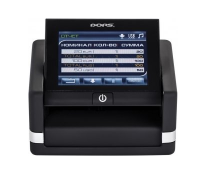

Продажа и обслуживание оргтехники в Минске
КаталогДетектор валют Dors 230

| Длина,мм | 105 |
|---|---|
| Ширина,мм | 115 |
| Высота,мм | 86 |
| Вес,кг | 0.55 |
Автоматический; скорость 60 банкнот/мин; проверка в ИК-спектре, проверка в УФ-спектре; базовые валюты: российские рубли, USD, EUR; определение номинала банкнот; дисплей; питание: аккумулятор.